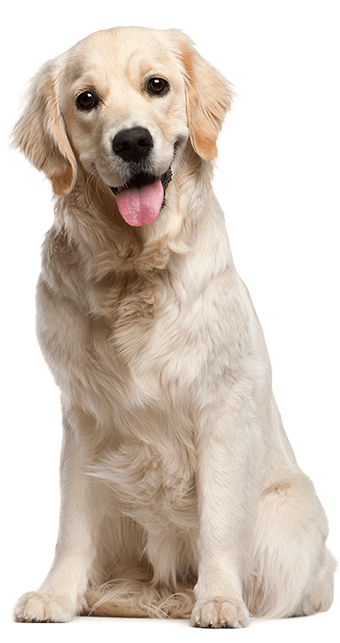

About Dog
Dogs are social animals and have a pecking order. Dogs live in packs and as the owner/caregiver, you are the pack leader. Commit to the role.
Socialization is critical for puppies or behaviour problems as adults are likely (fearful, aggression). It is important that puppies are not left alone for extended periods or behaviour problems are also likely.
Early weaning (before 12 weeks) can also contribute to behaviour problems. Rough housing with littermates and the mother teaches pups the "inhibited" bite plus other limits, therefore if adopted before 12 weeks, you must teach the puppy what is appropriate.
Training can start early. Start as young as possible. Food is a powerful lever. Do not be afraid to use it. Puppies can attend puppy classes starting at 12 weeks of age.
A dog that is well trained and knows his/her place is generally more content and stable. This is important to dog psychology. It is important that your dog listens to all of the family members, including the children. A dog that considers him/herself higher on the social order than one or more of the family members is at risk of being a biter. Involve all family members, especially the children, in the training.
Investigate breed characteristics before purchase. For example, border collies are energetic herding dogs. If you do not own sheep, then you must supply another outlet for all that energy, e.g. agility training.
Any dog of any breed or size can be trained to be well behaved, walk properly on a leash and obey basic commands. It is the owner's responsibility to ensure that his or her pet is not a nuisance or danger to other people and animals.